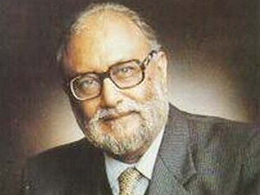
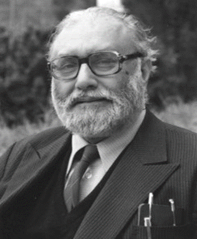

Abdus Salam
(1926—1996) theoretical physicist
Abdus Salam was an extraordinary personality. His intelligence and generosity impressed all those who approached him. He was also given unprecedented respect by scientific community of the whole world. He was born on January 29, 1926 in Jhang, Pakistan. At the age of 14, he secured the highest marks ever recorded in matriculation examination of the Punjab University. From that moment, Abdus Salam was a public figure


Education
Scholarships were to relieve his family of the cost of his further education, first at Government College, Lahore and later at Cambridge University, England. Abdus Salam did his Ph. D. in Theoretical Physics at Cambridge in 1951. He returned to Pakistan to teach mathematics at Government College, Lahore and became head of the department in 1952. Due to non- conducive scientific environment in Pakistan, he had to make a choice between Pakistan and physics. He left Pakistan for good physics and became a lecturer at Cambridge
Career And Vision
Scientific knowledge is a shared heritage of all mankind; East and west, South and North have all equally participated in its creation in the past, and, we hope, they will in the future. This joint endeavour in sciences is one of the unifying forces among the diverse people on this globe." Abdus Salam Salam also did much for the promotion and organization of scientific community in developing countries. He founded International Centre for Theoretical Physics, ICTP, at Trieste, Italy in 1964.